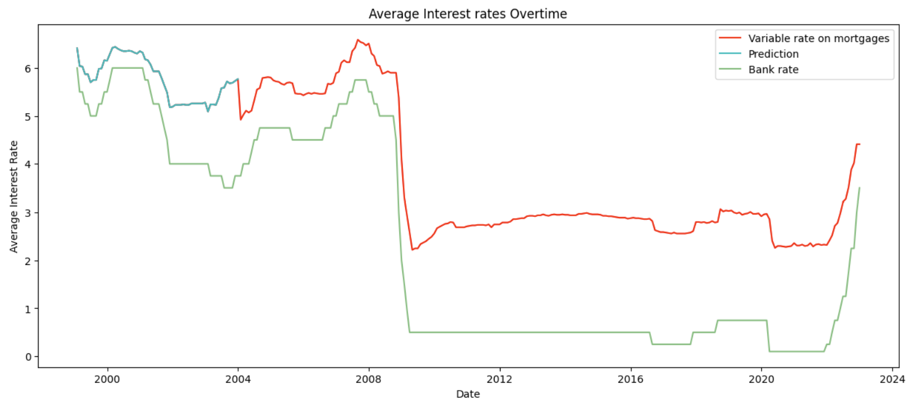

What is the total cost of an average mortgage?
Average mortgage plan in 1997, UK
Using the ONS HPI dataset, I assembled the following mortgage plan for an average UK first-time buyer in 1997.
I decided to choose 1997 as the starting year of the mortgage because of the wide range of data available from 1997 to 2022 which proved to be helpful in estimating missing data later on.
Given that interest rates on mortgages are variable, it can be difficult to predict the monthly cost of a mortgage. By using the average interest rates on mortgages for each year, the yearly cost of this mortgage plan can be calculated. I will be using the Bank of England's data on various LTV and the average mortgage rate data from an ONS dataset in order to achieve this
Data had to be cleaned.

What is the total cost of an average mortgage?
Average mortgage plan in 1997, UK
Using the ONS HPI dataset, I assembled the following mortgage plan for an average UK first-time buyer in 1997.
I decided to choose 1997 as the starting year of the mortgage because of the wide range of data available from 1997 to 2022 which proved to be helpful in estimating missing data later on.
Given that interest rates on mortgages are variable, it can be difficult to predict the monthly cost of a mortgage. By using the average interest rates on mortgages for each year, the yearly cost of this mortgage plan can be calculated. I will be using the Bank of England's data on various LTV and the average mortgage rate data from an ONS dataset in order to achieve this
Data had to be cleaned.
Missing data
Both the Bank of England and the ONS HPI datasets were missing data from some of the years that the mortgage plan covered.
However, I did manage to find other economic data for the UK during this time period and so this data could be used to help estimate the missing LTV data and missing average mortgage rate data.
Neural Network: 2 year fixed interest rates on 90% Loan-To-Value
Objective: Estimate what the interest rate could have been in 1997
Features:
- 2 year fixed interest rate on 75% LTV
- Bank rate set by the Bank of England
I decided to choose 1997 as the starting year of the mortgage because of the wide range of data available from 1997 to 2022 which proved to be helpful in estimating missing data later on.
Given that interest rates on mortgages are variable, it can be difficult to predict the monthly cost of a mortgage. By using the average interest rates on mortgages for each year, the yearly cost of this mortgage plan can be calculated. I will be using the Bank of England's data on various LTV and the average mortgage rate data from an ONS dataset in order to achieve this